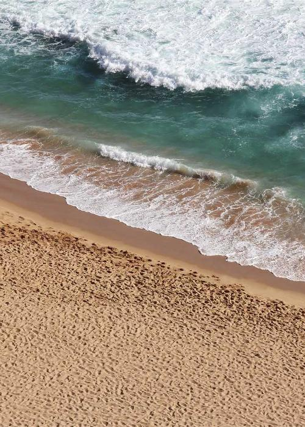

Photography portfolio
Jerrythepopper
洪 立 楷 ／ 攝 影 作 品
Selected · 2018 — 2026
以影像捕捉人文、街頭與空間的情緒。
在孤寂感與時間流動中，找到畫面的重量。
Photographer · 3D Creator · Based in Taipei. Brand collaborations with Hasselblad, Leica, Sony, Oppo, Giant, and more.


No. 07

07
Selected · 2023 — 2026
Work工作
Brand collaborations and editorial projects. Click any tile to view the project on Instagram.
View work →
No. 08

08
Photographer · 3D Creator
About關於我
Jerrythepopper 洪立楷，1996年生於台北。攝影師、3D創作者，Stairs Space 共同經營者。
Read more →